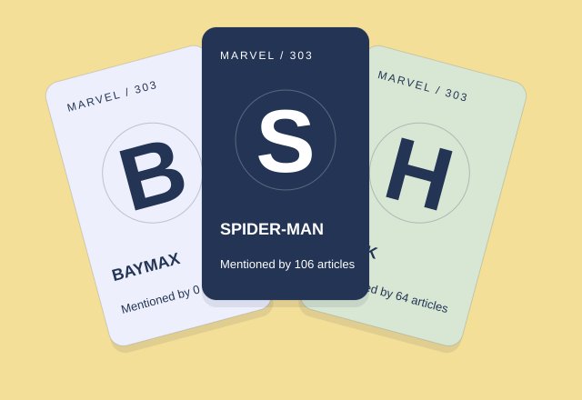

Loading the frozen snapshot…
Week 1 · Networks
Why the same heroes keep turning up.
Imagine collecting one card for every Marvel character here. Each pack gives you five cards, but some are much easier to draw than others. Try a few packs and watch for repeats.
Each card is a Wikipedia article. A link is a clickable reference to another article—not a friendship between characters. We use the same 303 articles throughout.

Open a pack
Five cards per pack · you can get repeatsOur rule: the more articles mention a character, the more often its card appears. Every card still has a chance. This is a game rule, not a measure of fame.
Open a pack to see your next five cards.
What we found
Being mentioned more makes a card easier to find.
Spider-Man is mentioned by 106 other articles. Baymax is mentioned by none. Under our draw rule, Spider-Man’s card is 107 times as likely to appear as Baymax’s. That is why collecting the last few cards takes so long.
Being mentioned and mentioning others are different things. Spider-Man’s page points to nine other articles. Betsy Braddock’s points to 28, but only seven point back to her. The direction of a link matters.
These are probabilities per draw, not a promise about the next pack.
THE TAKEAWAY
The last few cards take the longest.
Curious? Go deeper.
Charts, data and methods for anyone who wants to check the details.
Explore the explanations & evidence
See the link counts on linear and log scales

Who gets mentioned most—and how did we check?
THE POST · WEEK 1 · NETWORKS
Who gets linked, and who does the linking?
What we asked
Which articles get linked to, which ones do the linking, and who is left out entirely? And does being famous make a card easy or hard to draw?
What we did
We loaded all 303 roster entries before adding a single edge, so the 17 isolates survive. Then we plotted in-degree and out-degree on linear and log–log axes, drew the whole roster to find what sits outside the giant component, and built a five-card pack rule where each draw picks an article with weight (incoming links + 1) / 2,087. Finally we asked Wikipedia's API to re-derive three articles' out-links and checked them against the snapshot.
What surprised us
The hubs are the easy cards. Spider-Man alone is linked by 106 articles, while 58 articles share the lowest drop rate, including all 17 isolates. Finishing the set takes about 1,945 packs on average. And the articles that link out most (Betsy Braddock, 28 outgoing links) are not the ones that get linked to most.
The other surprise was structural: a nine-character island from a single 1986 series that cites itself 22 times and the rest of the roster never.
In-degree against out-degree

Why those are different people
Incoming links count references from other articles; outgoing links count references in the article itself. Familiarity and article length could help explain the different rankings, but this snapshot does not measure editors’ decisions or establish those causes.
Spider-Man receives 106 links and links out to 9; Betsy Braddock links out to 28 and receives 7. Only Deadpool, Doctor Strange and She-Hulk appear in both top-ten lists. Across all 303 articles, in- and out-degree correlate (Spearman 0.70, Pearson 0.50), despite the different leaders.
Does the snapshot still match Wikipedia? (we checked)
The snapshot was frozen on 26 August 2026, and the edges were
harvested from the raw wiki-source, where an internal link
appears as
[[Page name]]. So we re-derived a corner of it
ourselves: fetch the wiki-source through the API, extract the
[[…]] targets, keep the ones that resolve to a
roster article, and compare with the frozen edge list.
| Article | Live | Snapshot | Agree | Only live | Only snapshot |
|---|---|---|---|---|---|
| Betsy Braddock | 28 | 28 | 28 | 0 | 0 |
| Radian (Morituri) | 6 | 6 | 6 | 0 | 0 |
| Baymax | 0 | 0 | 0 | 0 | 0 |
Exact agreement on all three, including the two interesting
edge cases: the roster's biggest out-linker, and an isolate
whose zero is a real zero rather than a loading mistake. Three
articles out of 303 is a spot check, not a validation of the
whole snapshot — but it does confirm we understand how the
edges were built. One practical note for anyone repeating
this: Wikipedia answers 403 unless the request
carries a User-Agent header naming your client.
What does the whole network look like?
The whole roster, drawn
303 ARTICLES · 19 PIECES · UNDIRECTEDIgnore link direction and the roster is not one network but nineteen. A giant component of 277 articles holds 91.4% of the roster. Then there is one nine-article island, and 17 articles with no link in either direction.

The islands outside the giant component
The nine-article island is a single 1986 limited series, Strikeforce: Morituri. Its characters cite each other 22 times and never once cite anyone else in the roster — and nobody else cites them. That is the shape a self-contained corner of a canon makes in a link network: not a weak connection to the centre, but no connection at all.
The 17 isolates are a different phenomenon. Baymax, Super Rabbit, Miracleman, Yo-Yo Rodriguez and thirteen more sit on the roster because a category page says they are Marvel superheroes, yet no article in the category links to them and they link to nobody. They are the reason we added every node before any edge; load the edge list alone and 17 of the 303 characters silently disappear.
The island, drawn on its own

Components are computed on the undirected graph, so “island” means unreachable in either direction. Following arrows only, the roster splits further: 66 strongly connected components, the largest holding 229 articles.
How uneven are the links? Explore the charts
How the draw changes what you see
Most articles receive very few links. One gets 106. The rare cards are the ones tucked away in the tail of our collection, not the celebrities.
Both series use percentages, but they answer different questions: how common is a degree among articles, versus how often did your weighted draws find it? Log view uses degree + 1 so the 58 zero-incoming articles remain visible. Empty bins are omitted.
Read the distribution as a table
Sketch your own distribution
Drag across the sketch to set a rough shape, or enter counts for seven degree bins. Your sketch is an unscored thought experiment.
Why does collecting everyone take so long?
The expected wait is about 9,721 individual draws. Each minimum-rate card has a 1 / 2,087 chance per draw. Isolates matter, but they are not the whole bottleneck: 41 other articles share their drop rate.
Requiring the 17 isolates adds about 694 draws to the expected wait compared with collecting only non-isolates under the same probabilities. That is about 7.1% of the full expected wait.
Try estimating the number of packs
Browse all 303 cards
Your card index
Card art is typographic. Every name, degree and source link comes from the roster.
Explore: can Baymax get home?
Bonus: can Baymax get home? ↗What can this dataset tell us?
What the data means
303 article entries and 1,784 directed links from the course’s frozen 26 August 2026 snapshot. A link means one article links to another within this roster. It does not measure friendship, hero strength, popularity or the whole Marvel universe.
Download the snapshot and metrics (JSON)Limits of the experiment
The drop rule is designed for learning. It does not model purchases or a real trading-card product. A long-tailed plot alone does not establish a power law. Collection progress is saved in this browser and may be lost when storage is cleared.
Technical methods & code
The directed roster gives in-degree and out-degree. Five independent draws per pack allow duplicates. The unequal coupon-collector expectation is calculated by integrating the probability that at least one card is still missing, checked against 20,000 independent exponential-race simulations. Expected whole packs lie between 1,944.19 and 1,944.99; approximately 1,945 is a rounded presentation, not an exact value. See analysis/week01_packs.py and the downloadable week01_packs.json.
Analysis and source code on GitHub. All experiments run locally in your browser; the frozen data is never edited.
AI use and authorship
Built with AI assistance for interface design, programming, explanation drafts and test construction. Metrics come from the provided snapshot and reproducible analysis; the games and metaphors are authored presentation choices. Numerical checks compare independent Python and browser implementations. The free-play tools are not course hand-ins.